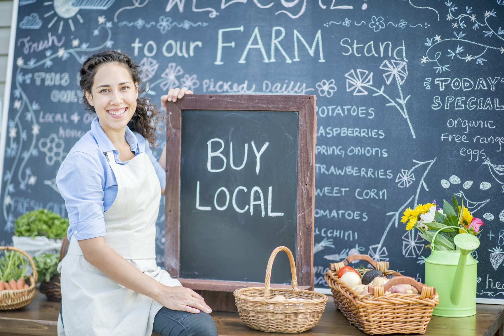

Target Audience
The target audience are local business owners and familes who are part of the Kempton Park community. Our goal is the foster a sense of community by having familes partisapating in the local events, which are supported by the locally owned business. We are hoping that as the community get to know the local business owners they will want to support these businesses and help them thrive, this will help our community thrive as a whole.
Local family

- Lyn Pritchard
- Married with 3 kids
- Profession: House Wife
- Age of 32
- Bachelor Degree: Education
- Looking to raize a family in a good community
Local business owners
- Joey Evans
- 48 years old
- Profession: Dentist
- looking to increase his customers
- Owns a local business
- Married 4 kids